<ion-view view-title="Login">
  <ion-content>
  	
  	<button dark class="button button-large button-dark" ng-click="go('app/dashboard')">
  		Continue with Facebook
    </button>
  </ion-content>
</ion-view>